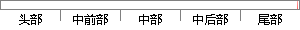

高校宿舍管理权和学生权利的博弈与平衡[J].
片段位置图

相似结果|
相似片段 1：“先斩后奏”。学生周末休息权及宿舍隐私权的保护受到了巨大的侵犯。四、平衡两权利之间冲突的几点建议合理地协调个人私权利和公共利益是平衡高校宿舍管理权和学生隐私权的前提。高校宿舍管理权和学生隐私权并不是案例所表现
相似片段 2：也没有履行告知的义务而是“先斩后奏”。学生周末休息权及宿舍隐私权的保护受到了巨大的侵犯。四、平衡两权利之间冲突的几点建议合理地协调个人私权利和公共利益是平衡高校宿舍管理权和学生隐私权的前提。高校宿舍管理权和学生隐私权并不是案例所表现的对立和冲突，相反，两者应相互配合、相辅相成。
相似片段 3：213138．03(中)LegalSystemAndSocietyi太帮．J占缸金 0管理视野4试析高校宿舍管理权与学生隐私权的冲突何艳摘要我国传统上一直将学校与学生的权利冲突定位为民事法律冲突
相似片段 4：●●{=IlE●■_高校管理权与学生受教育权冲突及学生权利保障之探究①崔 红(沈阳师范大学，辽宁沈阳110034)摘要：高校拥有的自主管理权和学生的受教育权在高等教育活动中形成了权力与权利的博弈。高校管理权和学生
相似片段 5：权利与高校管理权力的博弈。由于高校管理法律体系不完善，缺乏相应正当程序以规范管理行为，高校学生又没有得力的被救济机制以限制不合理管理，导致学校滥用权力侵犯大学生合法权利包括隐私权。一、宿舍管理与高校
相似片段 6：与学生权利的冲突与平衡张蓓蓓，韩靖然（华北电力大学团委，河北保定 071003）125· ·①罗大珍：《在冲突中寻求平衡的学生权利与高校管理权》，《教育与职业》2008年第 29期。②［法］孟德斯鸠：《论法的精神》（上），张雁深译，商务印书馆，1961年版，第 154页。
相似片段 7：——权力与权利的博弈高校所拥有的自主管理权和学生的受教育权在高等教育活动中形成了权力与权利的博弈。在这一博弈的场域中，高校与学生作为参与的主体。一方的策略选择都会受到对方策略选择的影响。在我国现阶段，由于
相似片段 8：这种矛盾的症结，就在于高校和大学生都没有正确、清晰地界定出各自权利(宿舍管理权和宿舍住宅权)的界限。对于高校而言，它看重的是安全的校园环境和良好的管理秩序；对于大学生而言，他所看重的是个性的张扬和
相似片段 9：这些权利冲突在本质上还是属于行政法内部关系冲突，也就是我国理论界为何更倾向于把高校与学生之间的关系放到内部行政法律关系说的原因。高等院校管理学生的受教育情况，宿舍内务卫生情况，人身自由情况等方面
相似片段 10：我们要深刻领会并切实贯彻到行动上．做好高校的历史教育工作．努力把大学生培养成为建设中国特色社会主义事业的接班人。参考文献：1994：368。251．离敕管理权行学生宪法权利保障口天津科技大学 朱新华
|
※ 片段修改建议 ※
近似词参考：- 学生：门生
- 权利：权力
- 平衡：均衡
系统自动生成语句： 高校宿舍管理权和门生权力的博弈与均衡[J].
注：本片段修改建议为系统自动生成，仅供参考。